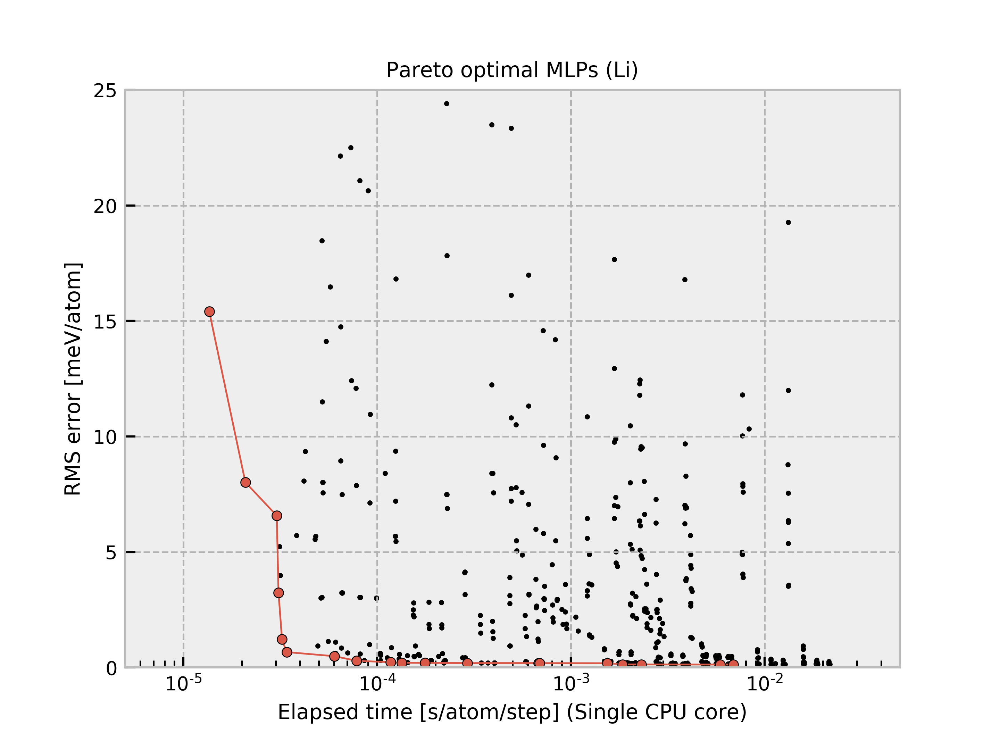

Mo-2020-05-28-dataset-3000-common6¶
{kind=link}
The current structure dataset is composed of 3,000 structures generated from six simple structures (FCC, BCC, HCP, simple cubic, omega, beta-Sn types). A more detailed procedure is found in J. Chem. Phys. 148, 234106 (2018). The procedure to estimate interatomic potentials from the dataset is found in Phys. Rev. B 99, 214108 (2019) and Phys. Rev. B 102, 174104 (2020).
All Pareto optimal MLPs are available
here.
Name |
Time [ms] (1 core / 36 cores) |
RMSE [meV/atom] / [eV/ang.] |
|---|---|---|
pair-1 |
0.014 / 0.006 |
153.87 / 0.2778 |
pair-15 |
0.021 / 0.006 |
92.255 / 0.2389 |
pair-22 |
0.023 / 0.006 |
25.499 / 0.1842 |
pair-43 |
0.035 / 0.006 |
21.225 / 0.1719 |
pair-44 |
0.051 / 0.010 |
15.352 / 0.1564 |
pair-51 |
0.070 / 0.012 |
13.575 / 0.1530 |
pair-45 |
0.074 / 0.015 |
11.034 / 0.1463 |
pair-52 |
0.102 / 0.014 |
9.8083 / 0.1428 |
pair-53 |
0.151 / 0.017 |
9.2643 / 0.1379 |
pair-54 |
0.175 / 0.021 |
9.0638 / 0.1349 |
gtinv-460 |
0.225 / 0.021 |
8.9939 / 0.1405 |
gtinv-359 |
0.405 / 0.039 |
8.9935 / 0.1348 |
gtinv-467 |
0.407 / 0.040 |
8.5144 / 0.1341 |
gtinv-215 |
0.663 / 0.039 |
8.2169 / 0.0938 |
gtinv-216 |
0.732 / 0.046 |
8.1722 / 0.0902 |
gtinv-331 |
0.804 / 0.047 |
5.6258 / 0.0889 |
gtinv-427 |
0.807 / 0.058 |
5.5133 / 0.0870 |
gtinv-351 |
0.951 / 0.057 |
5.0855 / 0.0869 |
gtinv-336 |
1.855 / 0.094 |
3.9886 / 0.0833 |
gtinv-434 |
1.859 / 0.094 |
3.9246 / 0.0828 |
gtinv-435 |
1.950 / 0.099 |
3.6971 / 0.0780 |
gtinv-356 |
2.156 / 0.114 |
3.3977 / 0.0786 |
gtinv-462 |
2.160 / 0.112 |
3.2837 / 0.0777 |
gtinv-463 |
2.286 / 0.120 |
3.1645 / 0.0725 |
gtinv-361 |
3.880 / 0.191 |
3.0476 / 0.0789 |
gtinv-469 |
3.899 / 0.187 |
2.9800 / 0.0783 |
gtinv-470 |
4.038 / 0.192 |
2.8102 / 0.0731 |
gtinv-477 |
6.865 / 0.310 |
2.7903 / 0.0749 |
gtinv-465 |
6.874 / 0.306 |
2.5824 / 0.0686 |
gtinv-472 |
12.481 / 0.573 |
2.5113 / 0.0675 |
gtinv-473 |
12.771 / 0.592 |
2.4473 / 0.0645 |
gtinv-480 |
21.694 / 0.930 |
2.4326 / 0.0652 |
Column “Time” shows the time required to compute the energy and forces for 1 MD step and 1 atom, which is estimated from a simulation of 10 runs for a structure with 284 atoms using a workstation with Intel(R) Xeon(R) CPU E5-2695 v4 @ 2.10GHz. Note that the MLPs should be carefully used for extreme structures. The MLPs often return meaningless values for them.